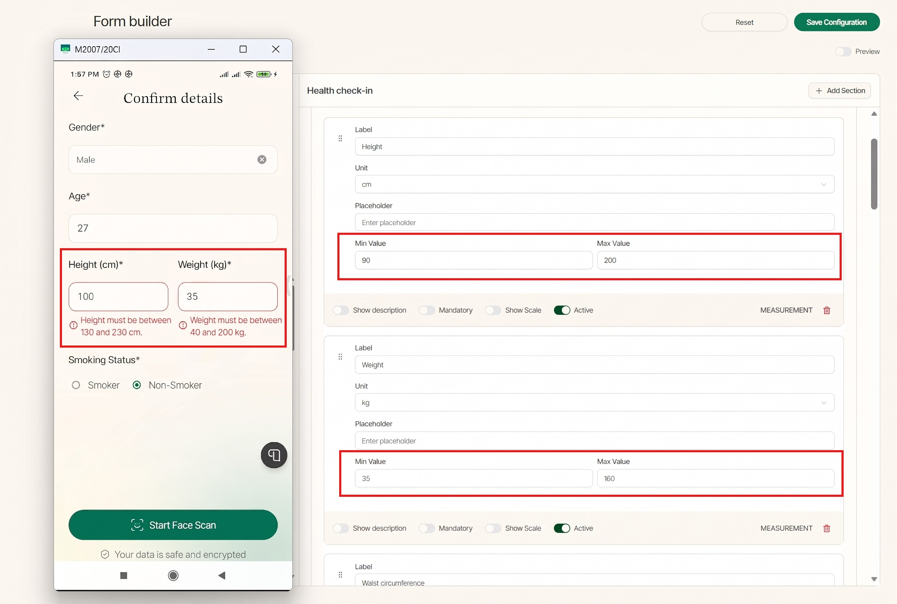
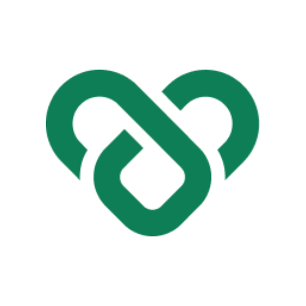

Partho Protim
Building a new product, launching a feature, or improving an existing one?I can help you find bugs early, improve quality, and release with confidence through manual and automation testing. I ensure your product works smoothly and delivers a better user experience.
Who I Am
QA Automation Lead at CodeBlaze, where I build and maintain automated suites for web, desktop, and mobile apps with Python, Playwright, Appium, Behave/BDD, and PyTest. I run CI/CD test execution with automated Grafana reporting, and use MCP and Claude Code to speed up test creation and expand coverage.
I have 4+ years of hands-on QA experience in both manual and automation testing. I help startups and businesses identify issues early, validate complete user journeys, and make sure their products work as expected before reaching real users.
My focus is on understanding the product, thinking from the user's perspective, finding potential risks, and delivering clear, actionable feedback, so teams reduce release risk, save testing time, and ship with confidence.
- Currently
- QA Automation Lead at CodeBlaze
- Based in
- Dhaka, Bangladesh
- Experience
- 4+ years in QA
- Focus
- Playwright · Appium · BDD · AI-assisted QA
- Platforms
- Web · Mobile · Desktop · API
What I Bring
I have hands-on skill across core testing types, backed by the frameworks and tools I use to bring them to life.
What I've Built
I have worked across three projects that show the range of the role, from ground-up QA on a wellness platform, to a national digital health programme, to manual-first QA for a hospital application.
ConnectedLife V2.0, Navig8 AI Digital Health Monitor
Navig8 AI connects wearables, lab results, face scans, and lifestyle metrics into one intelligent system, tracking 70+ biomarkers on a single dashboard. AI insights, validated by medical experts, are turned into personalised plans and nudges via a companion app, helping users catch health risks early and build lasting routines.
I was involved across the full lifecycle, from reviewing wireframes with the design team to final delivery. I ran manual testing throughout the build, then introduced Playwright (web) and Appium (mobile) automation once development hit ~70%, which became my primary focus as the project matured. I owned Jira test management, led bug triage, sent weekly QA status updates, and set up CI/CD so every build auto-triggers the full suite and generates a report.
- Owned QA end to end, from design review through build, stabilization, and final delivery.
- Reviewed wireframes early and fed back usability and edge-case concerns.
- Ran manual testing throughout the build, covering functional, data, and UI checks.
- Introduced Playwright (web) and Appium (mobile) automation at ~70% development, later making it my primary focus.
- Managed test cases in Jira and led bug triage to closure.
- Sent weekly QA status updates and set up CI/CD for automated builds and reporting.
HealthTrack SG
HealthTrack SG is a national digital health programme run by Singapore's Health Promotion Board, helping residents manage or reduce their risk of chronic conditions by combining wearable data, clinical records, and lifestyle insights into a single wellness score. The platform tracks 52+ biomarkers with real-time alerts and notification reminders, forming part of a broader national initiative to deliver person-centric, data-driven preventive health.
I worked on QA for the platform end to end, from writing manual test cases against the product design, to testing the web app, to building out automation, API, and performance test coverage.
- Wrote manual test cases based on the product design and specifications, and managed them in Xray for real-time indexing and full visibility across the testing lifecycle.
- Tested the web application manually, logging and tracking defects as they surfaced.
- Reported and tracked bugs through resolution, working closely with developers to reproduce, prioritize, and verify fixes.
- Tested alert and notification reminder flows to ensure timely, accurate delivery across biomarker thresholds.
- Built automation coverage with Playwright for web and Maestro for mobile.
- Designed and executed API test suites in Postman, covering functional validation, data integrity, and edge cases across service endpoints.
- Built and ran load and performance tests using JMeter to validate system behavior under expected and peak user loads, identifying bottlenecks before release.
- Collaborated closely with developers, designers, and product managers to build a well-rounded, reliable product.
- Owned QA end to end for the project, planning, execution, and sign-off, helping the team consistently deliver a high-quality product.
Alexandra Hospital
Alexandra Hospital's application spans both mobile and web, and my work here was weighted heavily toward manual testing, walking through flows by hand, logging defects, and verifying fixes. I also built out a layer of automation for the web application using Selenium to cover key regression checks.
ConnectedLife's unique combination of AI capabilities and human expertise sets them apart in the digital health space. Their responsiveness and pioneering approach have made a tangible difference to this work, seen not just as a vendor, but as a long-term partner in driving impactful, technology-enabled care to Alexandra Hospital and its patients.
- Owned full-cycle manual testing across both the mobile app and web application, covering functional, data, and UI validation end to end.
- Verified data accuracy across the platform, checking that patient data, readings, and records were captured, calculated, and displayed correctly across every screen.
- Validated business logic against product specifications, testing edge cases and boundary conditions to make sure the system behaved correctly under real-world scenarios.
- Tested alerts and notification nudges for accuracy and timeliness, confirming they triggered correctly against defined thresholds and reached users as expected.
- Walked through all user flows end to end, onboarding, daily use, and edge-case paths, to catch issues early and ensure a smooth, reliable experience.
- Worked closely with developers and product team through regular discussion and feedback loops, using findings from each testing cycle to continuously improve product quality.
- Built Selenium automation for the web application to cover key regression checks, reducing manual effort on repeat test cycles.
- Logged and tracked defects by severity, from show-stoppers down to low-priority issues, following through with developers until each was verified and closed.
How I document, test, and report on quality
The habits that keep a QA process trustworthy, clear defect writeups, specs that hold up under review, and reporting a team can act on without chasing me for details.
Automation & release reporting
Automation coverage by platform
Defect lifecycle snapshot
BDD scenario
Feature: Dashboard summary score
Scenario: Verify dashboard summary score is displayed
Given the user is logged in
When they open the dashboard
Then the summary score should be displayed
Failure trace
Sample bug report
- Configure the height field's min/max range in the admin dashboard and save.
- Open the app's "Confirm details" screen.
- Enter a height value that falls inside the configured range.
- Observe the validation message shown under the field.

Where I've worked
Five and a half years growing from operations and post-deployment testing into leading QA and automation strategy end to end.
- Build and maintain automated suites for web, desktop, and mobile apps using Python, Playwright, Appium, Behave/BDD, and PyTest.
- Use MCP and Claude Code to speed up test creation and expand coverage.
- Run CI/CD test execution with automated Grafana reporting, alongside manual regression, UI, and cross-platform testing.
- Document and track defects in JIRA with detailed evidence, and drive root-cause analysis on failures.

- Defined and drove end-to-end QA and automation strategy, leveraging Claude AI and GitHub Copilot for faster test delivery.
- Led and mentored the QA team, setting testing standards and shift-left practices across the SDLC.
- Built and maintained Playwright (web) and Appium (iOS & Android) frameworks in Python within a monorepo.
- Managed CI/CD pipelines via GitHub Actions and Jenkins for continuous regression, API, and backend validation.
- Led end-to-end testing, web, mobile, API, load, and manual, to ensure stable, high-quality releases.
- Built scalable Playwright automation frameworks using MCP, BDD, and POM design patterns.
- Ran cross-platform mobile automation with Appium across Android and iOS.
- Managed MySQL test data seeding, database validation, and CI/CD pipeline improvements.
- Designed automation scripts in Playwright using the POM structure and BDD model.
- Performed manual, API, and load testing across all application layers.
- Tracked and resolved defects with cross-functional teams in Jira.
- Conducted post-deployment testing and wrote test cases for web and mobile applications.
- Deployed surveys on a CMS platform and analysed user data to support quality and insights.
- Created user flowcharts, use cases, and ER diagrams; managed Agile delivery via Jira.
Background
Let's talk QA.
If you're looking for a QA engineer who can help improve quality, reduce risk, and ship with confidence, I'd welcome the opportunity to connect.